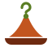
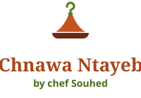
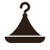
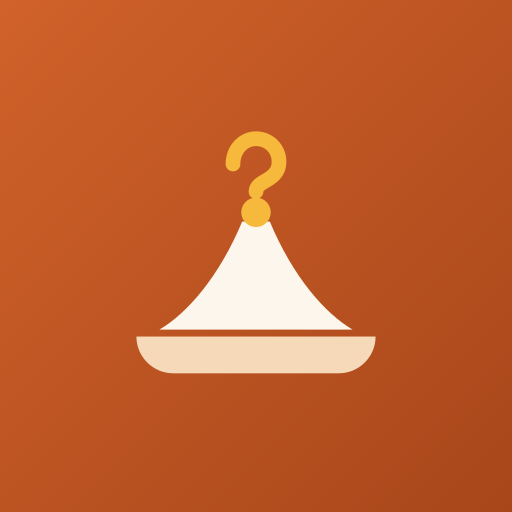

← Maquettes D4 · v4.2 — le logo définitif sera fourni par le chef ; liste des fichiers de marque et dimensions
Chnawa Ntayeb
by chef Souhed
« Elli 3andek fel frigo, chnowa tnajem tayeb ? »
1. Le logo — emplacement (le logo définitif sera fourni)
v4.2 : le chef fournira son logo. Les deux pistes ci-dessous restent des emplacements de maquette ; il suffira de remplacer les fichiers de assets/brand/ (mêmes noms) et le symbole MARK de assets/app.js.

Piste 1 · « Tajine ? » — recommandée
Le couvercle du tajine porte un point d'interrogation dont le point est le bouton du couvercle : la question du nom (« chnawa ? » = « quoi ? ») posée sur l'objet de cuisine le plus reconnaissable de Tunisie, sans motif folklorique. Lisible en 16 px, fonctionne en une couleur, devient naturellement l'icône d'application.
Piste 2 · « Bulle-bol »
Une bulle de conversation (la question, l'assistant) contenant un bol fumant. Plus « application », très lisible, mais moins tunisienne et proche de nombreuses applis de recettes ou de messagerie.
Fichiers sources dans assets/brand/ (SVG). Le texte du logo utilise Fraunces : avant production,
un graphiste vectorise le texte, ajuste les approches et dessine éventuellement le nom en arabe (D-19). Aucune banque
d'images ni police payante n'est nécessaire.
Déclinaisons de la piste 1

empilé (écran d'accueil, bienvenue)
une couleur (tampon, emballage)2. Icône d'application

maskable (zone sûre 80 %, ici découpe ronde Android)3. Palette vive et chaleureuse (direction C)
La vivacité vient de trois couleurs franches utilisées avec parcimonie (une action paprika par écran,
des accents safran, l'olive pour les repères) sur un fond crème chaud — pas de dégradés multicolores ni d'animations.
Toutes les paires texte / fond passent l'AA (node tools/contrast-check.mjs). Le sombre utilise des bruns chauds,
jamais du gris-bleu.
4. Typographie
Ce soir, une chakchouka ?
6 ingrédients sur 8 — il manque la merguez et la harissa.
شنوة نطيّب الليلة؟
5. Direction photo — les « photos d'identité » de l'application
Les photos portent l'essentiel de la chaleur. Elles doivent être vraies, cohérentes et reconnaissables : même lumière, même famille de vaisselle, même étalonnage, partout.
Planche d'ambiance (photos temporaires, Wikimedia Commons — à remplacer)


Séance photo à prévoir (liste de prises)
| Série | Nombre | Usage | Cadrage |
|---|---|---|---|
| Portraits « by chef Souhed » (en cuisine, mains, sourire) | 3–4 | bienvenue, page « à propos », nouveautés du chef | 4:5 et 16:9, arrière-plan cuisine floue |
| Plats signature (ojja, kosksi, chakchouka, mechouia, lablabi, brik) | 6 × 2 angles | héros d'accueil et fiches recette | 16:9 (héros) + 4:3 (cartes), sujet centré |
| Toutes les recettes publiées | 1 par recette | cartes, suggestions, favoris | 4:3, même table, même lumière |
| Gestes (casser un œuf, râper la tomate, rouler la semoule) | 6 | étapes de recette, onboarding | 16:9, mains seulement |
| Ingrédients à plat (frigo du quotidien, marché) | 6 | frigo vide, scan, bienvenue | 1:1 zénithal |
| Table conviviale (plats partagés, pain, mains qui se servent) | 3 | accueil « nouvel utilisateur », installation | 16:9 |
Budget : option A — le chef avec un téléphone récent, près d'une fenêtre, en suivant ce guide (coût 0 DT, 2 à 3 demi-journées) ; option B — un photographe culinaire une journée pour les portraits et les 6 plats signature, le reste en option A (D-14). Livraison : originaux 2400 px, exports AVIF + WebP en 480 / 1024 px, qualité ~80, ~25–40 ko par carte, ~80–120 ko par héros, couleur dominante notée pour l'affichage pendant le chargement.
Aucun portrait n'est simulé dans les maquettes : un visage inventé ne doit jamais représenter chef Souhed.
7. Fichiers de marque à fournir — liste et dimensions
Le logo définitif sera fourni par le chef : les fichiers des maquettes (« Tajine ? ») ne sont que des emplacements. Cette liste est la commande complète : chaque ligne dit quoi fournir, à quelle taille et où c'est utilisé. Règle générale : fournir un original vectoriel (SVG ou PDF/AI) pour tout ce qui est logo ; les PNG se déclinent ensuite depuis cet original. Les tailles ci-dessous sont en pixels.
Légende : Obligatoire = nécessaire à la mise en ligne · Recommandé = qualité d'installation et de partage · Optionnel = plus tard (stores, campagnes).
7.1 Logo
| Fichier | Dimensions | Format | Usage | Priorité |
|---|---|---|---|---|
logo-horizontal.svg | vectoriel, ratio ≈ 4,5 : 1 ; affiché à 32–40 px de haut | SVG (+ PNG 1200 × 266 transparent) | en-tête desktop et mobile, e-mails | Obligatoire |
logo-horizontal-negatif.svg | idem | SVG (+ PNG 1200 × 266) | mode sombre, sur photo ou fond paprika | Obligatoire |
logo-empile.svg | vectoriel, ratio ≈ 1,4 : 1 | SVG (+ PNG 1024 × 730) | bienvenue, écran de chargement, page « à propos » | Recommandé |
symbole.svg | carré, vectoriel ; lisible à 16 px | SVG (+ PNG 512 × 512 transparent) | barre d'onglets du navigateur, avatar des réseaux, filigrane | Obligatoire |
symbole-mono-noir.svg · -blanc.svg | carré | SVG | une couleur : tampon, impression, badge de notification | Recommandé |
logo-ar.svg (si D-19) | comme le logo horizontal | SVG | en-tête en arabe et derja arabe | Optionnel |
| Fiche couleurs et police | — | PDF ou texte | codes HEX exacts du logo, nom de la police, zone de protection | Obligatoire |
7.2 Icônes d'application (PWA, navigateurs, téléphones)
| Fichier | Dimensions | Format | Usage | Priorité |
|---|---|---|---|---|
icon-192.png | 192 × 192 | PNG | manifeste PWA (« any »), Android | Obligatoire |
icon-512.png | 512 × 512 | PNG | manifeste PWA, écran de démarrage Android | Obligatoire |
icon-maskable-192.png · -512.png | 192 × 192 et 512 × 512 ; symbole dans le cercle central de 80 % (≈ 410 px sur 512) | PNG, fond plein | Android (découpe ronde, carrée, goutte…) | Obligatoire |
icon-monochrome-512.png | 512 × 512, symbole blanc sur transparent | PNG | icônes à thème Android 13+ | Optionnel |
apple-touch-icon.png | 180 × 180, fond plein, sans transparence ni coins arrondis | PNG | écran d'accueil iPhone / iPad | Obligatoire |
favicon.svg + favicon.ico | SVG + ICO contenant 16, 32 et 48 | SVG, ICO | onglet du navigateur | Obligatoire |
badge-notification.png | 96 × 96, symbole blanc sur transparent | PNG | petite icône des notifications Android | Recommandé |
| Captures pour l'installation | mobile 1080 × 1920 (× 3) · desktop 1920 × 1080 (× 2) | PNG ou JPG | fenêtre d'installation enrichie (Chrome / Android) | Recommandé |
| Écrans de démarrage iOS | 1179 × 2556, 1290 × 2796, 1170 × 2532, 750 × 1334 (portrait) | PNG | ouverture de la PWA sur iPhone (sinon écran blanc) | Optionnel |
7.3 Partage et référencement
| Fichier | Dimensions | Format | Usage | Priorité |
|---|---|---|---|---|
og-default.jpg | 1200 × 630 (zone utile centrale 1080 × 566), < 300 ko | JPG | aperçu des liens (WhatsApp, Facebook, X, Messenger) pour les pages sans photo | Obligatoire |
| Aperçu par recette | 1200 × 630, recadré automatiquement depuis la photo du plat | JPG | partage d'une recette | généré (rien à fournir) |
logo-google.png | carré, minimum 112 × 112 (fournir 512 × 512), fond blanc | PNG | données structurées « Organization » (résultats Google) | Recommandé |
| Avatar réseaux sociaux | 1080 × 1080 (affiché en rond) | PNG/JPG | Facebook, Instagram, TikTok | Optionnel |
| Bannières réseaux | Facebook 1640 × 624 · YouTube 2560 × 1440 (zone sûre 1546 × 423) | JPG | pages de la marque | Optionnel |
| Google Play (si application TWA) | icône 512 × 512 · bannière 1024 × 500 · captures 1080 × 1920 | PNG/JPG | fiche du store | Optionnel |
7.4 Photos d'identité (séance photo, § 5)
| Série | Original à livrer | Exports générés par l'application | Usage | Priorité |
|---|---|---|---|---|
| Héros d'accueil et de recette | 16:9 · 2400 × 1350 (+ recadrage 21:9 possible) | 1024 et 1600 px de large, AVIF + WebP | accueil, fiche recette | Obligatoire (6 plats) |
| Carte de recette | 4:3 · 2400 × 1800 | 480 et 960 px | listes, suggestions, favoris | Obligatoire (1 par recette) |
| Catégories | 1:1 · 800 × 800, sujet centré (affiché en rond) | 240 px | carrousel des catégories (16) | Obligatoire |
| Étapes | 16:9 · 1600 × 900 | 720 px | étapes utiles, mode cuisine | Optionnel |
| Portrait du chef | 4:5 · 1600 × 2000 + 1:1 · 1024 × 1024 | avatar 96 / 240 px | « by chef Souhed », nouveautés, bienvenue | Recommandé |
| Bienvenue | 4:3 · 1600 × 1200 (× 3) | 720 px | 3 écrans d'introduction | Recommandé |
| Ingrédients | 1:1 · 400 × 400, fond neutre | 120 px | vignettes du frigo et des courses | Optionnel (repli : pastille) |
Les originaux restent hors de l'application ; elle sert uniquement les exports réduits (poids cible : carte 25–40 ko, héros 80–120 ko). Format d'original : JPG qualité 90 ou PNG, profil sRGB, sans filtre.
8. Voix
« Bonsoir ! On cuisine quoi ce soir ? »
« Il manque la merguez. Vérifiez qu'il vous reste du piment. »
« Elli 3andek fel frigo, chnowa tnajem tayeb ? » comme signature, dans toutes les langues.